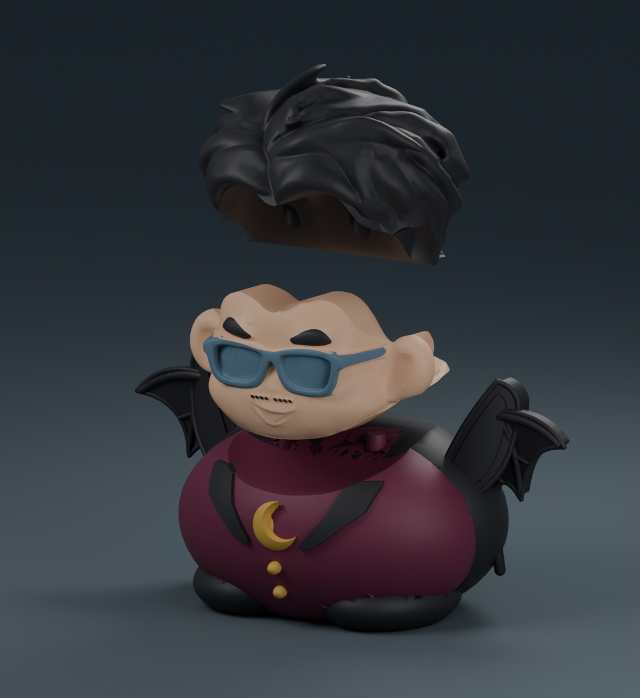
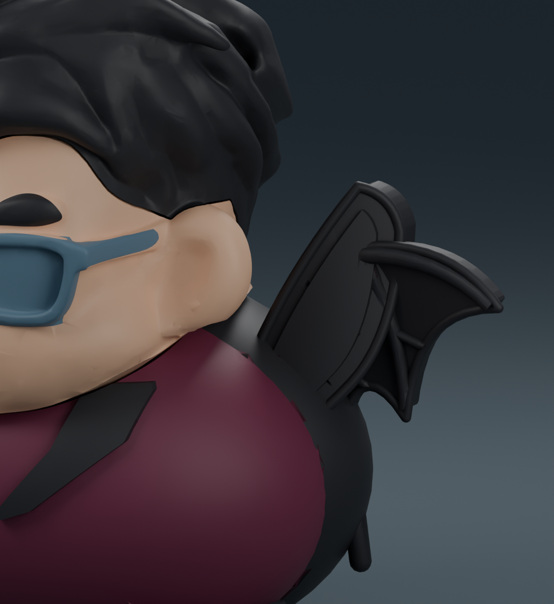

月夜伯爵小陳晉
全黑翼領新版：你截圖中的兩側整片色塊均已由酒紅改為黑色，酒紅僅保留在衣身。預覽與原配色 3MF 已同步重新製作。
翼領精修版：翼膜加入 3.2 mm 凹面起伏、漸細分叉翼骨與圓弧包邊。衣領改成向後包覆的曲面立領，搭配全黑內襯、滾邊與寬翻領，保留圓胖衣身。
他不是來嚇人的，是穿著最正式的禮服來討糖。酒紅禮服、立領蝠翼披風，胸前別著一彎金色新月。


蝠翼與衣領近看

選擇製作方式
分件原配色：三張盤各自列印，再由下往上組裝。禮服盤使用黑、酒紅、金三色；臉盤使用膚色、黑、藍灰三色；頭髮盤單色黑，可用一台四槽 AMS 分盤列印。
一體原配色：整隻連成一件，使用五色，需要五個可用供料槽位。單台四槽 AMS 可選分件原配色方案。
單色一體成型：整隻一次列印，沒有中途換色；如想呈現示意配色，需自行上色。
列印與組裝
以 Bambu Studio 開啟 3MF 專案，重新對應自己的線材槽位並切片。範例設定為 X1 Carbon／0.4 mm／PLA／0.16 mm 層高，已設定支撐與底邊；多色專案含擦料塔。
先清理支撐與定位孔，再將臉對準禮服上的榫向下放入，最後由上方裝入頭髮。先試配，確認順暢後再少量點膠。蝠翼與立領均為禮服的一部分，不需額外組裝。
已檢查封閉網格、單一連通實體、零件干涉、拔出路徑及原生切片。尚未實體試印。
下載內容
參考列印時間
三件原配色約 29 小時 42 分；一體原配色約 35 小時 36 分；單色一體約 8 小時 35 分。實際耗時請以自己的切片結果為準。